Напомню, что речь идет о фрагменте барельефа, который был найден начинающим французским археологом Франсуа Ленорманом (François Lenormant, 1837—1883). В дальнейшем он станет известным ученым, членом французской Академии надписей и изящной словесности, профессором Сорбонны.
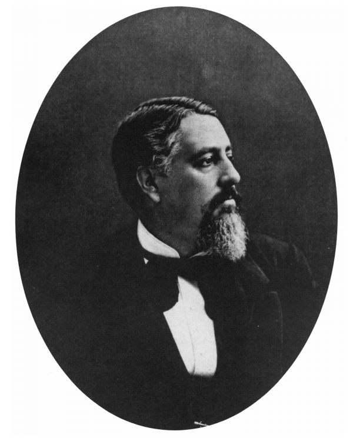
А в момент находки артефакта ему едва исполнилось 15 лет.
Можно было бы предположить, что знакомство с первым изображением, которое трактовалось как изображение античной триеры, наделало много шума в ученом мире. Но это не так. Образец был передан в фонды Афинского музея Акрополя, о чем появилось сообщение в периодических записках музея, он был внесен во все полагающиеся для такого случая каталоги и… все. Пока известие не дошло до хорошо знакомого нам энтузиаста морской археологии и истории Огюста Жаля, который в то время по заказу императора Франции Наполеона III работал над историей флота Цезаря (La flotte de César (1861)). Вот как сам О.Жаль описывает это событие (он успел вставить это описание в упомянутую выше книгу в виде специального постскриптума).
Памятник, который так вдохновил меня, был обнаружен около 1852 года в Афинском акрополе. Вот его история, которую я узнал от Франсуа Ленормана, молодого ученого-антиквара, достойного того имени, которое он носит. Г-н Ленорман привез из Афин гипсовый слепок с барельефа, а также любезно предоставил мне его фотографию, … так что я смог сравнить гипсовый отпечаток с рисунком, который свет создал на бумаге. Они отличаются тем, что в слепке с мрамора, который был отлит для мистера Ленормана, отсутствовал первый гребец (изуродованный) слева и почти вся фигура последнего гребца справа. Как видно, памятник подвергся некоторому воздействию между моментом времени, когда он был сфотографирован Д. Константиносом, и временем, когда с него сделал слепок Франсуа Ленорман. Фрагмент мрамора имеет сорок сантиметров в длину; на фотоотпечатке всего около тринадцати.
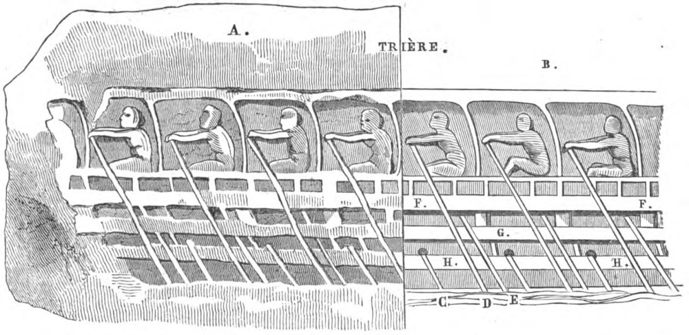
А. Слепок с барельефа. В. Реконструкция. С. Весло таламита. D. Весло транита. E. Весло зигита. F.F. Постица. G, H.H. Вельсы.
Я не привожу текст оригинала на французском языке Желающие легко смогут ознакомиться с ним, он есть в сети (La flotte de César... Augustin Jal. Firmin Didot frères, fils & cie., 1861, стр.229).
Сделаем некоторые пояснения по тексту.
«…узнал от Франсуа Ленормана, молодого ученого-антиквара, достойного того имени, которое он носит.»
О.Жаль имеет в виду тот факт, что отцом Ф.Ленормана был известный археолог и нумизмат XIX века Шарль Ленорман (1802-1859).
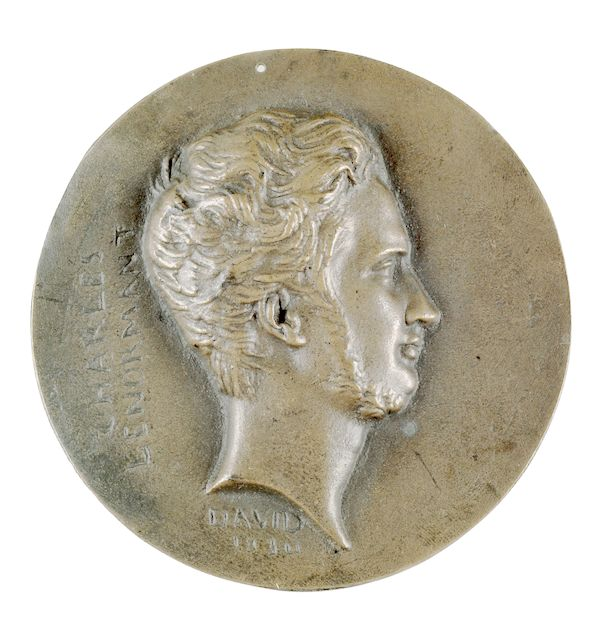
Медаль в честь Шарля Ленормана (1830). Художник Давид д’Анже. Walters Art Museum (Балтимор, США)
Отец мальчика мечтал, чтобы сын продолжил его дело и, начиная с шести лет, занимался с ним греческим языком и историей древнего мира. Ленорман-младший проявил большое усердие в учении и уже в четырнадцать лет опубликовал в журнале «Revue archéologique» свою первую работу о найденных в Мемфисе артефактах.
«памятник …был сфотографирован Д. Константиносом»
Димитриос Константину (Δ. ΚΩΝΣΤΑΝΤΙΝΟΥ, Φωτογράφος) был известным греческим фотографом 19-го века, работавшим в Афинах. О его жизни известно немного. Первая публикация его работ относится к 1857 году. Был первым фотографом, работавшим в Греческом археологическом обществе.
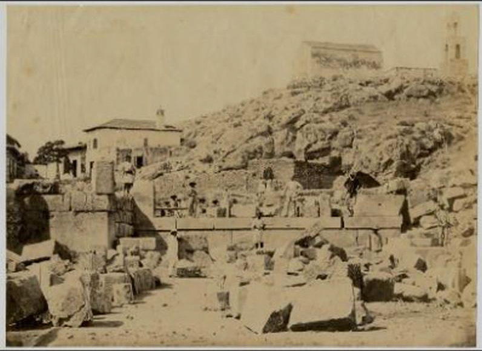
Археологические раскопки в Элевсине под руководством Ленормана. Фото Д. Константину (1862)
Единственный момент в его биографии, который может нас насторожить – это появившееся в прессе того времени сообщение о широком применении фотографом ретуши, из-за чего некоторые ученые задались вопросом: можно ли вообще считать его отретушированные фотографии фотографиями или нет.
Но вернемся к тексту О.Жаля.
Восемь гребцов-транитов, которые гребут верхними веслами триремы, хорошо вырезаны, что можно заметить при внимательном осмотре с помощью лупы, движения их тел совершенно естественны, а детали, хотя и изменены временем, превосходны и на рисунке, и на модели. Гребцы сидят на банках, которых никто не видит, их спины обращены к носу. Руки и ноги вытянуты, спины согнуты…. Весла, длинные и тяжелые, опустились в воду, и гребцы начинают действие, результатом которого должно стать продвижение корабля на несколько шагов, пропорциональных величине их усилий.
В этом эмоциональном месте О.Жаль приводит строки из пятой книги Энеиды Вергилия, часть которых мы использовали в эпиграфе. В этом месте поэмы рассказывается о том, как Эней с оставшимися у него четырьмя кораблями прибывает на Сицилию, где устраивает поминальные игры в честь своего умершего отца Анхиса.
Плечи нагие блестят и лоснятся, маслом натерты.
Все сидят на скамьях и руки держат на веслах,
Знака ждут, замерев; лишь в груди трепещет, ликуя,
Сердце и бьется сильней, одержимое жаждою славы.
Громко пропела труба - и немедля с места рванулись
Все корабли, и соперников крик взвился в поднебесье.
Рук не жалея, гребцы разметают пенную влагу,
Тянется след за кормой, расступаются воды под килем,
Гладь рассекают носы кораблей и длинные весла.
ВЕРГИЛИЙ. ЭНЕИДА (Пер. С.Ошерова под ред. Ф.Петровского)
Публикация О.Жалем подробной информации о барельефе Ленормана подобно брошенному в воду камню вызвала расходящиеся круги гипотез относительно системы гребли на античных триерах. Собственно тогда родились все основные варианты размещения гребцов на триере, основанные на ленормановском изображении. Обсудим их в следующей части нашего рассказа. В завершение же сегодняшнего поста скажем несколько слов о судьбе первой реконструкции античной триеры, о которой упоминает О.Жаль и в основу которой был впервые положен барельеф Ленормана.
Французский император Наполеон III не только живо интересовался античной историей, но и сам работал над исследованием некоторых ее проблем. Широкую известность, в частности, получило его сочинение «Histoire de Jules César» («История Юлия Цезаря». Париж, 1865—66). Для нашего рассказа несомненный интерес представляет внимание, которое император проявил к первой попытке реконструкции античной триеры, предпринятой для решения «на модели в натуральную величину» проблемы размещения гребцов. Подробно об этом можно прочитать в предисловии к упомянутой выше работе Огюста Жаля. Жаль пишет, что император пригласил его, чтобы выяснить, имеется ли у ученого готовый проект триеры. Такового у Жаля не было, но он пообещал составить его. Эта встреча состоялась 7 мая 1860 года, а уже 29 июля основные идеи проекта были направлены Наполеону III.
Император подстраховался и практически одновременно с заказом проекта Жалю заказал чертежи действующей триремы известному французскому кораблестроителю Дюпюи де Лому (Dupuy de Lôme, 1816-1885), автору проекта первого в мире броненосца открытого моря La Gloire (1859) и других боевых кораблей с паровыми двигателями.
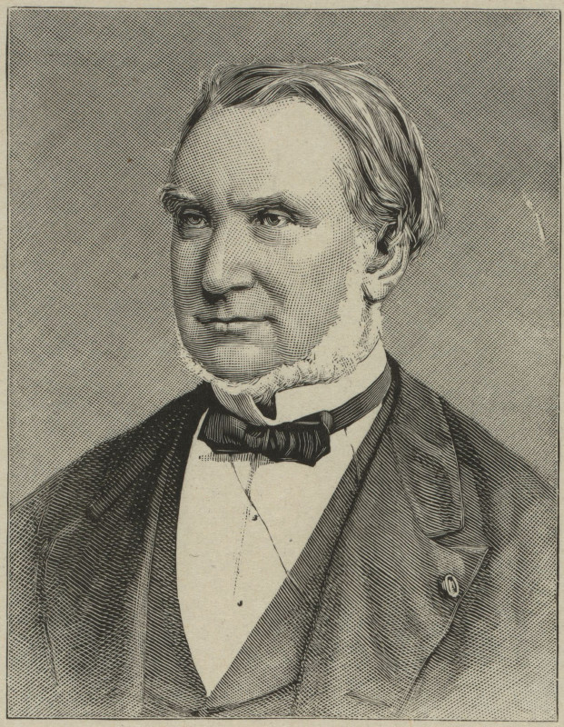
Фотография Дюпюи де Лома из Библиотеки Конгресса США
Контракт на постройку «специального судна» (bâtiment spécial) был подписан между Морским министерством и судостроительным предприятием E. Gouin & Ce. до поступления проекта О.Жаля в Секретариат императора, а именно 14 июля. От имени Морского министерства его подписали министр – адмирал Франции Гамелен и Дюпюи де Лом, занимавший в то время пост начальника материального департамента и директора управления военного кораблестроения министерства.
О.Жаль описывает эти события по-джентльменски сдержанно, но между строк чувствуется обида. В письмах, которыми обменялись Жаль и де Лом (были опубликованы Жалем), стороны пытались сохранить лицо в этой неприятной истории. Жаль даже сумел убедить де Лома уменьшить завал борта проектируемого корабли, который предусматривался проектом его соперника. Жаль также решительно выступил против намерения де Лома посадить всех гребцов на одной палубе.
Корабль спустили 9 марта 1861 года. На всё про всё потребовалось менее шести месяцев. Трирема имела 39,7 м в длину, 5,5 м в ширину и осадку 1,1 м. Движение ее обеспечивали 130 гребцов из числа матросов военных кораблей, базировавшихся в Шербуре. Отчет о спуске с фотографиями появился в популярном парижском журнале l’Illustration
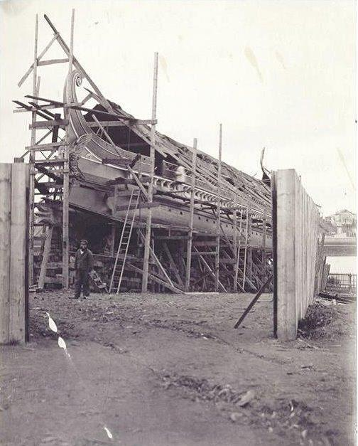
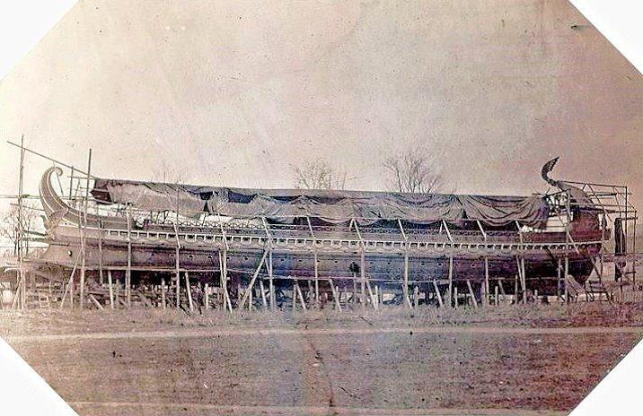
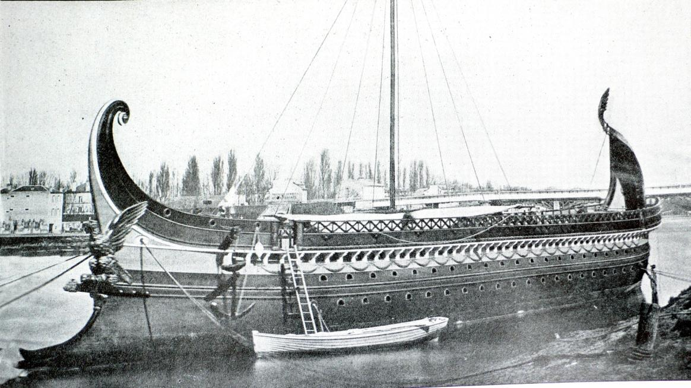
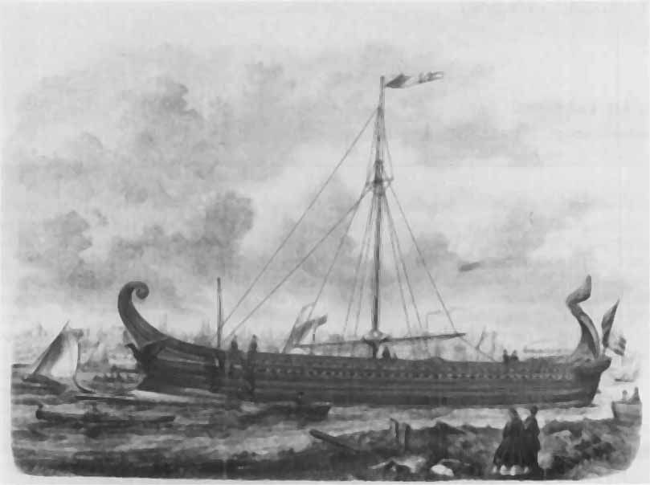
24 марта 1861 года на борт триеры поднялись император и императрица. Они наблюдали за работой экипажа триеры на переходе от моста Пон-де Сен-Клу по течению Сены до моста Пон-де-Нёйи.
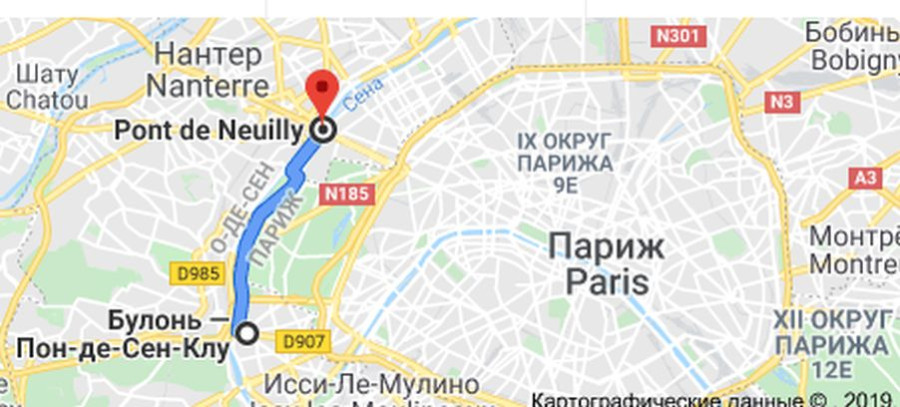
Скорость на переходе составила 5,5 узла (за вычетом скорости попутного течения реки). На обратном пути против течения реки триера достигла скорости 4,8 узла. На следующий день, уже без августейших особ на борту, триера повторила переход по этому же маршруту, имея скорость по течению 5,4 узла и против течения 4,5 узла. При этом надо учесть, что экипаж триеры практически не имел времени для тренировок накануне перехода.
В архиве морской префектуры Шербура, к которой была приписана триера, сохранился ее формуляр, исполненных на стандартных бланках морского министерства. Он датирован 24 июня 1861 года. В формуляре приводятся основные размерения триеры, величина и размещение балласта с указанием соответствующей осадки в носу и корме корабля, количество припасов. Указано, что корпус был обшит медью (для кораблей древнего Рима свойственной была обшивка из свинца). Указано время нахождения триеры в кампании: с 9 марта по 21 июня 1861 года. Корпус триеры не был просмолен поэтому он с трудом перенес морской переход от Гавра до Шербура. Переход осуществляли на буксире. Нидерландский исследователь Лееманн пишет, что переход этот очень напоминал путь участника Трафальгарского сражения Téméraire («Отважный») к последнему причалу с известной картины Уильяма Тёрнера
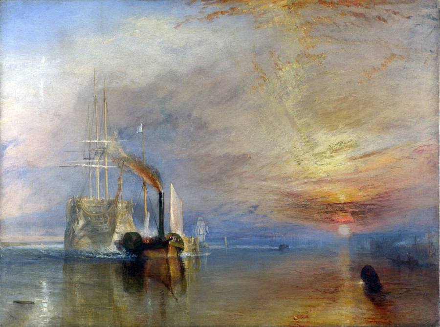
«Последний рейс корабля „Отважный“» — картина английского живописца Уильяма Тёрнера, написанная в 1839 году.
В отличие от полотна Тёрнера, триеру вели на буксире два небольших судна пароходства Сены (‘les courriers de la Seine’) и небольшое посыльное судно (abiso) вооруженное двумя пушками le Dauphin. Недалеко от Вернона триера села на галечную банку, но спустя два часа была с нее благополучно снята. Других происшествий за время перехода не было, что удивительно, так как корпус триеры не предусматривал технологию его набора в «шип и паз».
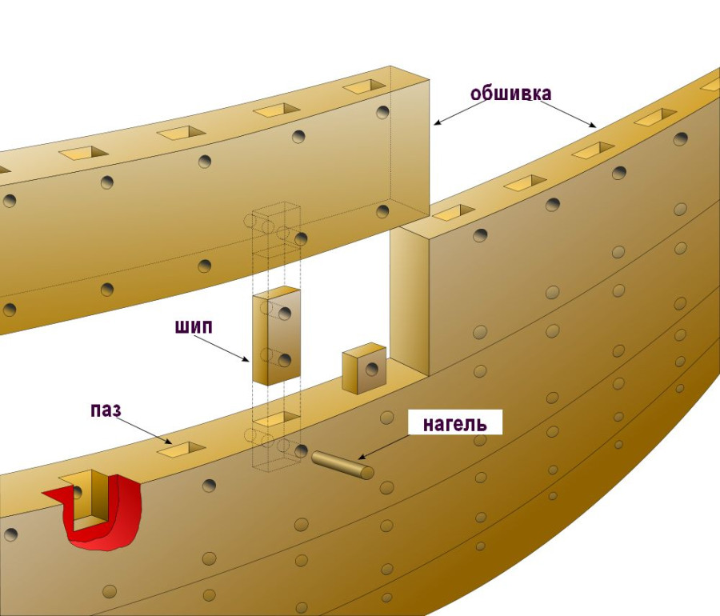
Первое документальное свидетельство такой технологии в судостроении древнего Рима было получено только в 1894 году, когда морские археологи обнаружили останки небольшого римского судна неподалеку от Vechten, Нидерланды.
Конечно, первая реконструкция античной триремы не являлась реконструкцией в точном смысле этого слова. В ней было много фантазии, и вообще, по мнению некоторых, она выглядела как корабль викторианской эпохи, ей не хватало разве что дымовой трубы по центру. Конец триеры был печальным. В 1875 году на имя морского префекта Шербура поступило письмо из кораблестроительного департамента за неразборчивой подписью. В письме предлагалось из-за неудовлетворительного состояния корабля использовать его в качестве плавучей мишени при испытании новой торпеды. В ответе из министерства на соответствующий запрос говорилось:
‘ce batiment n‘etant susceptible d’aucune autre destination, le ministre désire qu’il serve de cible dans les experiences de torpilles demandées par M. le Vice-amiral Cloué’.
Данное судно не пригодно ни для какой-либо другой цели; министр желает чтобы оно послужило мишенью в экспериментах с торпедами, о чем просит вице-адмирал Клуэ.
Морским министром Франции тогда был адмирал Louis Raymond, Marquis de Montaignac de Chauvance. Наполеон III и Огюст Жаль умерли двумя годами раньше. Живым свидетелем печального конца триеры из всех ее творцов остался только лишь Дюпюи де Лом.